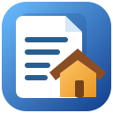

Captura automática con detección de bordes o fotografía manual cuando prefieras controlar el disparo. Recorta, gira, limpia y aplica filtros.
← Volver al catálogo
Android · Gratis · Sin publicidad

Documentos de Casa
Escanea, organiza y protege tus documentos en el móvil. Captura automática o manual, mejora de imagen, PDF y copias de seguridad cifradas.
Android 7+Escaneo manual y automáticoCopias cifradas
Descarga directamente desde GitHub Releases. Si tu navegador impide bajar el APK, ábrelo en GitHub.
Versión publicada1.7.6
Descargas públicasConsultando…
Todo tu archivador, organizado
Organiza documentos en seis carpetas, conserva varias páginas juntas y exporta o comparte documentos completos en PDF.
Acceso opcional con huella o contraseña, almacenamiento privado y copias de seguridad cifradas restaurables con contraseña.
Cómo instalar Documentos de Casa
- Pulsa «Descargar APK gratis» y espera a que se descargue el archivo de GitHub.
- Abre el APK desde Descargas y autoriza la instalación desde ese origen si Android te lo pide.
- Abre la aplicación, entra en una carpeta o usa el botón de escanear de la portada.
- Si quieres proteger el archivador, configura huella o contraseña en Ajustes.
Antes de actualizar o cambiar de teléfono: crea y conserva una copia cifrada de tus documentos y recuerda su contraseña. Un APK firmado con una clave diferente no puede actualizar la instalación anterior sin riesgo de perder datos.
Privacidad y funcionamiento
Los documentos se almacenan en el espacio privado de la aplicación. No necesita crear una cuenta para organizar o consultar los archivos. La exportación y la creación de copias son acciones iniciadas por el usuario.
Las imágenes se procesan mediante componentes de Android y Google ML Kit. Algunas funciones del escáner pueden requerir que Google Play Services descargue componentes al primer uso.
Se distribuye gratuitamente, sin publicidad ni suscripciones. Política general de privacidad de la Biblioteca ↗